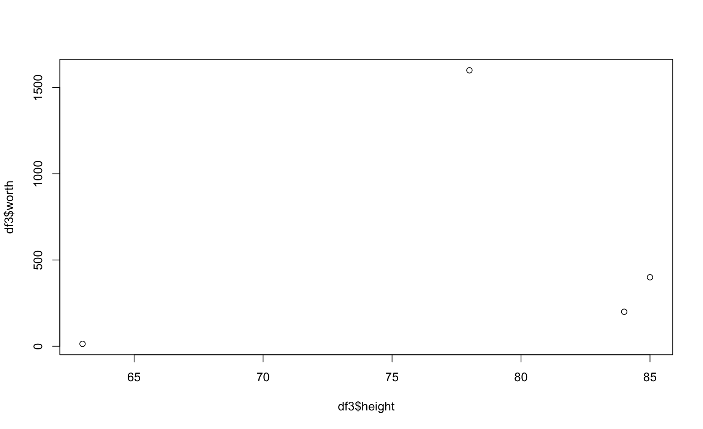

Module 19 Joining datasets
Learning goals
- How to join together two related datasets efficiently in
R
Joining: the basics
It’s not unusual to have data for a project spread out across multiple datasets. The data are all related, but the fact that they are ‘packaged’ separately into different files can things difficult. To work with such relational data in R, you eventually need to merge – or join – them into a single dataframe.
For example, say you are studying the economics of professional basketball. In one dataframe, df1, you have the net worth of famous players, in millions USD…
player <- c("LeBron","Mugsy","Shaq","Jordan","Hakeem","Kobe")
worth <- c(500, 14, 400, 1600, 200, 600)
df1 <- data.frame(player,worth)
df1 player worth
1 LeBron 500
2 Mugsy 14
3 Shaq 400
4 Jordan 1600
5 Hakeem 200
6 Kobe 600…and in a second dataframe, df2, you have their height.
player <- c("Jordan","Shaq","Magic","Hakeem","Stockton","Mugsey")
height <- c(78,85,81,84,73,63)
df2 <- data.frame(player,height)
df2 player height
1 Jordan 78
2 Shaq 85
3 Magic 81
4 Hakeem 84
5 Stockton 73
6 Mugsey 63Is there a correlation between these players’ net worth and their height? To answer this question you need to join these two datasets together. But the two datasets don’t contain the exact same roster of players, and the players are not in the same order. Hmm. Is there an efficient way to join these two datasets?
Yes! Thanks to the family of join() functions from the package dplyr.
These join() functions relate two dataframes together according to a common column name. In order for these functions to work, each dataframe has to have a column of the same name. In the case of df1 and df2, that shared column is player.
There are four join() functions you should know how to use:
**left_join()** joins the two datasets together, keeping all rows in the first dataframe you feed it.
player worth height
1 LeBron 500 NA
2 Mugsy 14 NA
3 Shaq 400 85
4 Jordan 1600 78
5 Hakeem 200 84
6 Kobe 600 NANotice that none of the players unique to df2 made it into this output; only players in df1 (i.e., the left of the two dataframes listed) remain. Also notice that any player from df1 who was not in df2 has an NA under the column worth. That is how these join() functions work: it fills in the data where it can, and leaves NAs where it can’t.
**right_join()** keeps all rows in the second dataframe you feed it:
player worth height
1 Shaq 400 85
2 Jordan 1600 78
3 Hakeem 200 84
4 Magic NA 81
5 Stockton NA 73
6 Mugsey NA 63**full_join()** keeping all rows in both dataframes:
player worth height
1 LeBron 500 NA
2 Mugsy 14 NA
3 Shaq 400 85
4 Jordan 1600 78
5 Hakeem 200 84
6 Kobe 600 NA
7 Magic NA 81
8 Stockton NA 73
9 Mugsey NA 63Finally, inner_join() keeps only the rows that are common to both dataframes:
player worth height
1 Shaq 400 85
2 Jordan 1600 78
3 Hakeem 200 84So, to answer our research question about the relationship between player height and net worth, we can now join these data sets and make a nice plot:

Hmm. Looks like we need more data!
Review exercise
This review exercise will involve both the joining skills you learned above as well as many of the skills learned in prior modules. But don’t worry: as with every exercise in this book, every puzzle here can be solved using the skills you have learned in prior modules.
Scenario: A sailing expedition in 2013 - 2015 studied the whales in the fjords of British Columbia, Canada. That research produced two datasets:
id species year distance seafloor temperature salinity thermocline
1 20140811103 HW 2014 44.1021 352.881 13.49104 25.75687 9.6325
2 20140811104 HW 2014 44.2729 363.563 13.49104 25.75687 9.6325
3 20140811106 HW 2014 46.7883 361.660 13.97642 25.14305 9.7859
4 20140812102 HW 2014 44.9049 317.864 14.11392 22.26935 9.7689
5 20140812104 HW 2014 44.8370 327.717 14.12843 22.21240 9.7689
6 20140812103 HW 2014 44.6589 353.749 14.17754 22.08326 9.7426
stratification euphotic.depth chlorophyll
1 5.0603 18.2951 81.8442
2 5.0603 18.2951 81.8442
3 5.5067 17.2179 66.1236
4 5.2032 18.0307 76.0000
5 5.2032 18.0307 76.0000
6 5.2039 18.0093 75.9543 id species behavior prey.volume prey.depth dive.time surface.time
1 20140811106 HW FEED 6.914610 120.76 351.00 237
2 20140812104 HW FEED 7.854762 79.02 281.00 87
3 20140812107 HW FEED 7.385667 96.92 300.25 80
4 20140812109 FW FEED 6.626298 105.87 366.00 189
5 20140812131 HW OTHER 6.356474 123.95 357.00 112
6 20140812140 FW FEED 3.820782 125.51 408.00 182
blow.interval blow.number
1 26.833 10.000
2 14.412 6.667
3 16.000 6.000
4 16.273 12.000
5 25.250 6.000
6 18.789 11.000Each row in these dataframes represent a close encounter with a whale (either a humpback whale, HW, or a fin whale, FW).
The env dataset provides details about the habitat in which the whale was found, such as seafloor depth and the amount of chlorophyll in the water (a proxy for productivity).
The dive dataset provides measurements of whale foraging behaviors, such as dive.time and the number of breaths at the surface (blow.number), as well as the quality of prey in the area (prey.volume and prey.depth).
Note that these two dataframes are linked by the id column, which is a unique code for each whale encounter.
[1] 20140811106 20140812104 20140812107 20140812109 20140812131 20140812140
[7] 20140813105 20140813107 20140813111 20140813117 20140814101 20140814102
[13] 20140814103 20140814104 20140819101 20140819102 20140819103 20140819106
[19] 20140819112 20140819115 20140821102 20140824102 20140824110 20140824112
[25] 20140824127 20140825104 20140825109 20140825115 20140825116 20140825121
[31] 20140827101 20140827106 20140827110 20140827111 20140827122 20140828109
[37] 20140828111 20140828115 20140828120 20140831101 20140831102 20140831106
[43] 20140831107 20140902202 20140902203 20140902208 20140902210 20140902212
[49] 20140903203 20140903206 20140904201 20140904202 20140904203 20140904205
[55] 20140904208 20140905202 20140905212 20140906204 20140906205 20140906212
[61] 20140906213 20140906216 20140907206 20140907212 20140908202 20140909202
[67] 20140909204 20140909205 20140909211 20140909215 20140910211 20140910215
[73] 20140911204 20150527104 20150527105 20150528101 20150528104 20150528107
[79] 20150528109 20150528110 20150530108 20150530114 20150530115 20150602101
[85] 20150602104 20150602106 20150606103 20150606106 20150607104 20150609101
[91] 20150609102 20150609105 20150609107 20150609111 20150609112 20150609113
[97] 20150610101 20150610103 20150610106 20150610107 20150610112 20150610116
[103] 20150612101 20150612102 20150613105 20150613107 20150613108 20150613110
[109] 20150614101 20150621201 20150621202 [1] 20140811103 20140811104 20140811106 20140812102 20140812104 20140812103
[7] 20140812107 20140812108 20140812109 20140812111 20140812112 20140812114
[13] 20140812115 20140812116 20140812120 20140812122 20140812127 20140812131
[19] 20140812130 20140812140 20140812141 20140813102 20140813107 20140813105
[25] 20140813111 20140813115 20140813117 20140813116 20140813122 20140814101
[31] 20140814102 20140814103 20140814104 20140814105 20140814106 20140817101
[37] 20140817102 20140818101 20140819102 20140819103 20140819101 20140819106
[43] 20140819108 20140819110 20140819113 20140819112 20140819111 20140819115
[49] 20140820101 20140821102 20140822102 20140822103 20140822107 20140823101
[55] 20140823106 20140823109 20140824102 20140824103 20140824105 20140824110
[61] 20140824112 20140824113 20140824114 20140824115 20140824116 20140824117
[67] 20140824118 20140824121 20140824122 20140824123 20140824124 20140824125
[73] 20140824127 20140824126 20140825101 20140825103 20140825104 20140825107
[79] 20140825108 20140825109 20140825112 20140825111 20140825110 20140825113
[85] 20140825115 20140825116 20140825117 20140825120 20140825121 20140825122
[91] 20140827101 20140827102 20140827104 20140827105 20140827106 20140827107
[97] 20140827109 20140827111 20140827112 20140827116 20140827120 20140827110
[103] 20140827122 20140827126 20140827125 20140827123 20140827127 20140827124
[109] 20140827128 20140828107 20140828109 20140828108 20140828110 20140828111
[115] 20140828112 20140828118 20140828115 20140828119 20140828120 20140828122
[121] 20140828123 20140828121 20140831101 20140831102 20140831106 20140831107
[127] 20140902201 20140902202 20140902203 20140902204 20140902208 20140902209
[133] 20140902210 20140902212 20140903204 20140903203 20140903206 20140903207
[139] 20140903211 20140903212 20140904201 20140904202 20140904203 20140904204
[145] 20140904205 20140904208 20140905202 20140905207 20140905210 20140905212
[151] 20140906203 20140906204 20140906205 20140906206 20140906208 20140906209
[157] 20140906212 20140906213 20140906214 20140906216 20140907205 20140907206
[163] 20140907208 20140907209 20140907210 20140907211 20140907212 20140908202
[169] 20140909201 20140909202 20140909203 20140909204 20140909205 20140909206
[175] 20140909211 20140909212 20140909215 20140910202 20140910203 20140910211
[181] 20140910215 20140910210 20140910219 20140911203 20140911204 20140911205
[187] 20140911209 20140911210 20140911211 20150526101 20150527103 20150527104
[193] 20150527105 20150528101 20150528104 20150528107 20150528108 20150528109
[199] 20150528110 20150530108 20150530111 20150530112 20150530114 20150530115
[205] 20150531102 20150602101 20150602104 20150602106 20150602109 20150602110
[211] 20150606103 20150606105 20150606104 20150606106 20150607104 20150607102
[217] 20150607103 20150607106 20150608102 20150608104 20150608105 20150609101
[223] 20150609102 20150609106 20150609105 20150609107 20150609108 20150609111
[229] 20150609113 20150609112 20150609115 20150610101 20150610103 20150610106
[235] 20150610107 20150610108 20150610111 20150610112 20150610115 20150610116
[241] 20150610118 20150612101 20150612102 20150613104 20150613105 20150613107
[247] 20150613108 20150613110 20150614101 20150617201 20150617202 20150621203
[253] 20150621202 20150621201 20150621204 20150621205 20150621206 20150621207
[259] 20150621208 20150621209 20150621210 20150621211 20150621212 20150621213
[265] 20150621214 20150621216 20150621218 20150621217 20150621220 20150621221
[271] 20150621223 20150621224 20150622203 20150623201 20150624201 20150624202
[277] 20150624204 20150626201 20150626202 20150626203 20150626206 20150627204
[283] 20150627212 20150627213 20150628201 20150628204 20150629204 20150629203
[289] 20150701201 20150701202 20150704201 20150704203 20150704204 20150704205
[295] 20150705202 20150705204 20150705217 20150706201 20150706206 20150707202
[301] 20150707201 20150707203 20150707205 20150707206 20150707207 20150707208
[307] 20150707209 20150707212 20150707214 20150707215 20150707217 20150707220
[313] 20150708203 20150708202 20150712302 20150713302 20150713304 20150713305
[319] 20150713307 20150713310 20150713311 20150713312 20150714302 20150714309
[325] 20150714316 20150715301 20150715309 20150717304 20150718302 20150718304
[331] 20150718303 20150718305 20150718308 20150718309 20150718310 20150718311
[337] 20150721303 20150721304 20150721311 20150721312 20150721316 20150722302
[343] 20150723304 20150723306 20150723307 20150723308 20150725301 20150725306
[349] 20150725307 20150726302 20150726311 20150726316 20150729307 20150729308
[355] 20150729309 20150729310 20150729311 20150731301 20150731302 20150802403
[361] 20150802404 20150802402 20150802406 20150802405 20150802407 20150802408
[367] 20150802409 20150802410 20150802411 20150802413 20150803401 20150803403
[373] 20150803411 20150805402 20150805407 20150805408 20150805412 20150805413
[379] 20150805414 20150805415 20150805410 20150806403 20150806406 20150806404
[385] 20150806405 20150807401 20150807403 20150807405 20150807409 20150808407
[391] 20150808405 20150808411 20150808413 20150808414 20150808419 20150808415
[397] 20150809404 20150809409 20150809410 20150811403 20150812401 20150812408
[403] 20150812403 20150812407 20150812409 20150812412 20150812416 20150812417
[409] 20150812421 20150813402 20150813406 20150813407 20150813410 20150814403
[415] 20150815405 20150815407 20150815408 20150815409 20150815418 20150815419
[421] 20150816403 20150816404 20150816405 20150817405 20150817404 20150817406
[427] 20150817412 20150817414 20150817415 20150817416 20150817417 20150817418
[433] 20150817419 20150817420 20150817421 20150818402 20150818403 20150819402
[439] 20150819403 20150819406 20150819407 20150819408 20150819410 20150819411
[445] 20150819413 20150820411 20150820414 20150820418 20150820420 20150823402
[451] 20150829501 20150829502 20150829503 20150831501 20150831504 20150831505
[457] 20150831507 20150831508 20150902501 20150902503 20150902505 20150902506
[463] 20150902507 20150902509 20150902510 20150902511 20150902512 20150902513
[469] 20150902514 20150902515 20150902516 20150902517 20150903502 20150904501
[475] 20150904505 20150905501 20150905503 20150905508 20150905511 20150908512
[481] 20150910502 20150911503 20150911505 20150912504 20150912506 20150912507
[487] 20150912510 20150912513 20150913502 20150913504 20150913503 20150913505
[493] 20150913506 20150914501 20150914503 20150914509 20150914508 20150914511
[499] 20150915502 20150915507 20150915512 20150916502 20150919502 20150920504
[505] 20150920509 20150921501 20150921502 20150921503Also note that some ids – but not all – can be found in both dataframes. These are the encounters for which we have both foraging behavior data as well as environmental data.
Task 1. Summarize your dataset.
Write the necessary code and fill in the
A total of
Task 2. Research question: Do these two species prefer different seafloor depths?
First, create a nicely formatted histogram that portrays the data relevant to this question.

Provide the code to test this research question statistically, then write a results statement below.
Welch Two Sample t-test
data: env$seafloor[env$species == "FW"] and env$seafloor[env$species == "HW"]
t = 4.7677, df = 78.011, p-value = 0.000008493
alternative hypothesis: true difference in means is not equal to 0
95 percent confidence interval:
52.84081 128.60877
sample estimates:
mean of x mean of y
445.7157 354.9909 Task 3. Another research question: Is prey volume correlated to chlorophyll concentration?
Whales eta krill, and krill eat phytoplankton. Chlorophyll is a proxy measurement for the amount of phytoplankton in the area. Based on these datasets, how good are krill at congregating in areas of high chlorophyll concentration?
First, prepare a plot to visualize what you will be comparing:
id species year distance seafloor temperature salinity thermocline
1 20140811103 HW 2014 44.1021 352.881 13.49104 25.75687 9.6325
2 20140811104 HW 2014 44.2729 363.563 13.49104 25.75687 9.6325
3 20140811106 HW 2014 46.7883 361.660 13.97642 25.14305 9.7859
4 20140812102 HW 2014 44.9049 317.864 14.11392 22.26935 9.7689
5 20140812104 HW 2014 44.8370 327.717 14.12843 22.21240 9.7689
6 20140812103 HW 2014 44.6589 353.749 14.17754 22.08326 9.7426
stratification euphotic.depth chlorophyll
1 5.0603 18.2951 81.8442
2 5.0603 18.2951 81.8442
3 5.5067 17.2179 66.1236
4 5.2032 18.0307 76.0000
5 5.2032 18.0307 76.0000
6 5.2039 18.0093 75.9543 id species behavior prey.volume prey.depth dive.time surface.time
1 20140811106 HW FEED 6.914610 120.76 351.00 237
2 20140812104 HW FEED 7.854762 79.02 281.00 87
3 20140812107 HW FEED 7.385667 96.92 300.25 80
5 20140812131 HW OTHER 6.356474 123.95 357.00 112
7 20140813105 HW FEED 7.472343 104.13 365.00 52
8 20140813107 HW FEED 3.261088 100.19 338.00 20
blow.interval blow.number
1 26.833 10.000
2 14.412 6.667
3 16.000 6.000
5 25.250 6.000
7 18.610 4.500
8 33.322 1.000[1] 446[1] 89[1] 89
Now carry out your statistical test.
Call:
lm(formula = hwd$prey.volume ~ hwd$chl)
Residuals:
Min 1Q Median 3Q Max
-4.4931 -1.2639 0.3534 1.3358 2.5978
Coefficients:
Estimate Std. Error t value Pr(>|t|)
(Intercept) 5.027405 0.415675 12.10 <0.0000000000000002 ***
hwd$chl 0.008340 0.003723 2.24 0.0276 *
---
Signif. codes: 0 '***' 0.001 '**' 0.01 '*' 0.05 '.' 0.1 ' ' 1
Residual standard error: 1.682 on 87 degrees of freedom
Multiple R-squared: 0.05453, Adjusted R-squared: 0.04366
F-statistic: 5.018 on 1 and 87 DF, p-value: 0.02763